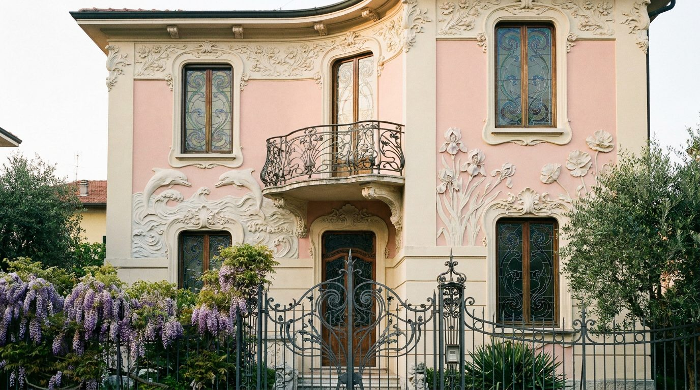
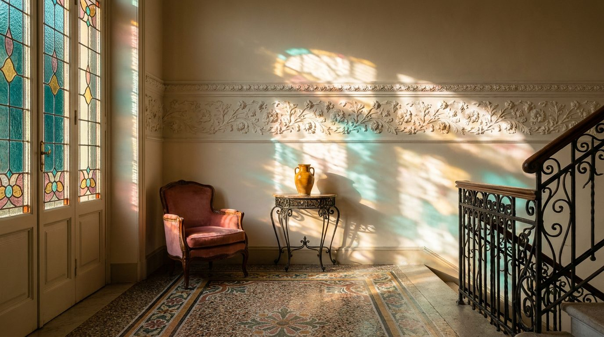

Atlante · IT-14 · Italia · Centro
Villino Liberty
Esempi · esterno e interno


Architettura · elementi riproducibili
- facciate con stucchi floreali/marini, ferri battuti, vetrate policrome, mosaici e maioliche
- altezza 3,5-4 m
- pavimento a graniglia decorata o mosaico
- porte con vetri colorati
- cornici a gola.
È la tipologia con il colore più "grafico": ottanio, ocra, rosa antico convivono senza stridere.
Luce
filtrata da vetrate colorate, con macchie di colore proiettate sulle pareti; luce laterale pomeridiana.
Prompt di generazione (EN)
Liberty-style Italian villa interior, 3.8 m ceiling, floral stucco frieze, stained-glass door casting coloured patches on an ivory wall, decorated graniglia floor, wrought-iron details, warm afternoon side light, 35 mm, teal-ochre-rose palette.